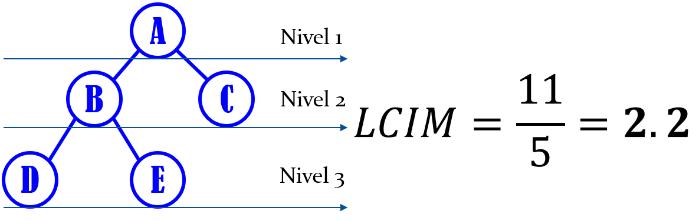
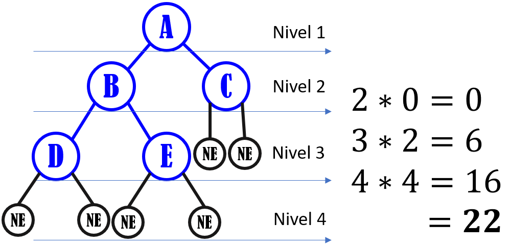
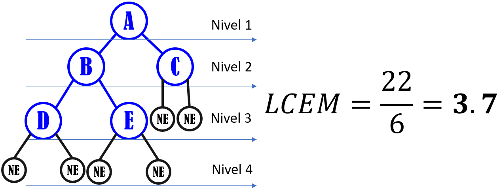

¿Árbol?
Un árbol es un caso particular de grafo, es un objeto que comienza con una raíz y se extiende en ramificaciones o lineas que terminan en un nodo.
Representan la estructura no-lineal y dinámica de datos más importante en computación. Dinámica porque puede cambiar durante la ejecución de un programa y no-lineal porque a cada elemento del árbol pueden seguirle varios
elementos.
Es una estructura jerárquica aplicada a un conjunto de elementos llamados nodos, uno de los cuales es conocido como raíz. Además, se crea una relación o parentesco entre los nodos que da lugar a términos
como
padre, hijo, hermano, antecesor, sucesor, ancestro.
Propiedades
El nodo del cual otro es hijo, es llamado su nodo padre.
Un hijo tiene como máximo un padre; un nodo sin padre es llamado nodo raíz (o simplemente raíz).
Los nodos sin hijos son llamados hojas.
Tiene un nodo al que se le llama "nodo raíz" o raíz del árbol, éste no tiene "padre".
Todos los nodos tienen una sola línea de entrada, excepto el nodo raíz, éste no tiene línea de entrada.
Todos los nodos que son descendientes de un mismo nodo "padre", son "hermanos".
Todo nodo que no tiene ramificaciones (hijos), es un nodo "terminal" u "hoja".
Todo nodo que no es raíz ni terminal es un nodo "interior".
"Grado" es el número de descendientes directos de un determinado nodo.
"Grado del árbol" es el máximo grado de todos los nodos del árbol.
"Nivel" es el número de ramificaciones que se deben recorrer para llegar a un determinado nodo.
"Altura del árbol" es el máximo número de niveles de todos los nodos del árbol.
Nodo Raíz: A
Nodos Hijos de B: D y E
Nodo Hermano de I: H
Grado del Árbol: 2
Altura del Árbol: 5 niveles
Longitud de un Árbol
Es el número de arcos que deben ser recorridos desde la raíz hasta el nodo X.
Longitud de Camino:
Se define la longitud de camino X como el número de arcos que deben ser recorridos para llegar, desde la raíz, al nodo X.
Por definición, la raíz tiene longitud de camino 1, sus descendientes directos tienen longitud de camino 2 y así sucesivamente

Longitud de Camino Interno
Es la suma de las longitudes de camino de todos los nodos del árbol.
En donde i = nivel del árbol, h = altura del árbol, ni = número de nodos en el nivel "i".

Media de Longitud de Camino Interna
Es el número de arcos que deben ser recorridos en promedio para llegar de la raíz a un nodo cualquiera del árbol.
En donde LCI = longitud de camino interno y "n" =número de nodos del árbol.
Longitud de Camino Externa
Es la suma de las longitudes de camino de todos los nodos especiales de un árbol extendido.
En donde "h" = altura del árbol, "i" = nivel del árbol y "nei" = número de nodos especiales en el nivel "i".
Media de Longitud de Camino Externo
Es el número de arcos que deben ser recorridos en promedio desde la raíz hasta un nodo especial cualquiera del árbol.
En donde LCE = longitud de camino externo y "ne" = número de nodos especiales.
Árbol Extendido:
Es aquel en el que el número de hijos de cada nodo es igual al grado del árbol. Para que se cumpla esta condición si es necesario se le agregan nodos especiales al árbol, tantos como sea necesario para que se cumpla la condición.
Nodos Especiales:
Su objetivo es reemplazar las ramas vacías o nulas y no pueden tener descendientes.
Practica lo Aprendido
1. Calcular la Longitud del Camino Interno y Externo, así como su respectiva media del siguiente árbol: